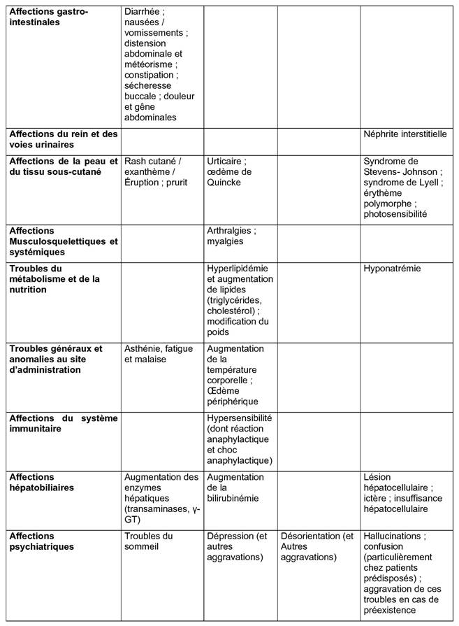

RÉSUMÉ DES CARACTÉRISTIQUES DU PRODUIT
ANSM - Mis à jour le : 21/10/2011
PANTOPRAZOLE EG LABO 20 mg, comprimé gastro-résistant
2. COMPOSITION QUALITATIVE ET QUANTITATIVE
Chaque comprimé gastro-résistant contient 20 mg de pantoprazole (sous forme de pantoprazole sodique sesquihydraté).
Excipients: chaque comprimé contient 38,425 mg de maltitol et 0,345 mg de lécithine de soja (dérivée de l'huile de soja).
Pour la liste complète des excipients, voir rubrique 6.1.
Comprimé gastro-résistant.
Comprimé jaune, de forme ovale.
4.1. Indications thérapeutiques
Traitement à court terme des symptômes du reflux gastro-œsophagien (par exemple pyrosis, régurgitation acide) chez l'adulte.
4.2. Posologie et mode d'administration
Posologie
La dose recommandée est de 20 mg de pantoprazole (un comprimé) par jour.
La prise des comprimés pendant 2 ou 3 jours consécutifs peut être nécessaire pour l'obtention d'une amélioration des symptômes. Une fois les symptômes disparus, le traitement doit être arrêté.
La durée du traitement ne doit pas excéder 4 semaines sans avis médical.
En cas de persistance des symptômes après 2 semaines de traitement continu, le patient doit consulter un médecin.
Populations particulières
Aucune adaptation de la dose n'est nécessaire chez le sujet âgé ou l'insuffisant hépatique ou rénal.
Utilisation chez l'enfant
L'utilisation de PANTOPRAZOLE EG LABO 20 mg, comprimé gastro-résistant n'est pas recommandée chez l'enfant et l'adolescent de moins de 18 ans en raison de l'insuffisance des données relatives à son efficacité et sa tolérance.
Mode d'administration
PANTOPRAZOLE EG LABO 20 mg, comprimé gastro-résistant, ne doit pas être croqué ou écrasé. Il doit être avalé entier avec un peu d'eau avant un repas.
Hypersensibilité à la substance active, aux benzimidazoles substitués, à la lécithine (dérivée de l'huile de soja) ou à l'un des autres excipients (voir rubrique 6.1).
Ne doit pas être administré avec l'atazanavir (voir rubrique 4.5).
4.4. Mises en garde spéciales et précautions d'emploi
Il est conseillé aux patients de prendre un avis médical en cas:
· De perte non intentionnelle de poids, anémie, saignement digestif, dysphagie, vomissements persistants ou vomissements avec du sang, car la prise de pantoprazole peut masquer les symptômes et retarder le diagnostic d'une affection sévère. Dans ces cas, une affection maligne doit être écartée.
· D'antécédents d'ulcère gastrique ou de chirurgie digestive.
· De traitement symptomatique continu d'une digestion difficile ou d'un pyrosis depuis 4 semaines ou plus.
· De jaunisse, d'insuffisance hépatique ou de maladie hépatique.
· De toute autre maladie grave affectant l'état général.
· D'apparition de nouveaux symptômes ou modification récente de symptômes chez des patients âgés de plus de 55 ans.
Les patients souffrant de troubles persistants et récidivants de type digestion difficile (dyspepsie) ou brûlures d'estomac (pyrosis) doivent régulièrement consulter leur médecin. Plus particulièrement, les patients âgés de plus de 55 ans prenant quotidiennement un médicament en vente libre en raison d'une digestion difficile ou de brûlures d'estomac doivent en informer leur pharmacien ou leur médecin.
Les patients ne doivent pas prendre simultanément un autre inhibiteur de la pompe à protons ou un antagoniste-H2.
Les patients devant faire l'objet d'une endoscopie ou d'un test respiratoire à l'urée, doivent consulter leur médecin avant de prendre ce médicament.
Les patients doivent être informés que les comprimés ne sont pas destinés à apporter un soulagement immédiat.
La prise de pantoprazole peut apporter un soulagement symptomatique après environ un jour de traitement. Toutefois, il peut s'avérer nécessaire de poursuivre le traitement pendant 7 jours en vue d'une disparition complète des brûlures d'estomac.
Le pantoprazole ne doit pas être pris à titre préventif.
Une diminution de l'acidité gastrique, quelle qu'en soit la cause y compris les inhibiteurs de la pompe à protons, peut augmenter la quantité de bactéries normalement présentes dans le tractus gastro-intestinal.
Un traitement par un anti-acide peut conduire à une légère augmentation du risque d'infections gastro-intestinales, notamment à Salmonella, Campylobacter ou C. difficile.
Ce médicament contient du maltitol. Son utilisation est déconseillée chez les patients présentant une intolérance au fructose (maladie héréditaire rare).
Ce médicament contient de la lécithine de soja (dérivée de l'huile de soja) et peut provoquer des réactions d'hypersensibilité (urticaire, choc anaphylactique).
4.5. Interactions avec d'autres médicaments et autres formes d'interactions
PANTOPRAZOLE EG LABO 20 mg, comprimé gastro-résistant peut réduire l'absorption des substances actives dont la biodisponibilité dépend du pH gastrique (par exemple kétoconazole).
L'administration concomitante d'atazanavir 300 mg/ritonavir 100 mg et d'oméprazole (40 mg une fois par jour) ou d'atazanavir 400 mg et de lansoprazole (dose unique de 60 mg) chez des volontaires sains a entraîné une réduction substantielle de la biodisponibilité de l'atazanavir. L'absorption de l'atazanavir est pH-dépendante, par conséquent le pantoprazole ne doit pas être administré avec l'atazanavir (voir rubrique 4.3).
Le pantoprazole est métabolisé au niveau du foie, par le système des isoenzymes du cytochrome P450.
Une interaction entre le pantoprazole et d'autres substances métabolisées par le même système enzymatique ne peut être exclue. Cependant, aucune interaction cliniquement significative n'a été observée au cours d'études spécifiques avec les médicaments suivants: carbamazépine, caféine, diazépam, diclofénac, digoxine, éthanol, glibenclamide, métoprolol, naproxène, nifédipine, phénytoïne, piroxicam, théophylline et un contraceptif oral contenant du lévonorgestrel et de l'éthinylestradiol.
Bien qu'aucune interaction n'ait été observée lors de l'administration concomitante de phenprocoumone ou de warfarine au cours des études pharmacocinétiques cliniques, quelques cas isolés de modification de l'International Normalised Ratio (INR) ont été rapportés, lors de leur administration simultanée, après la mise sur le marché. En conséquence, chez les patients traités par des anticoagulants coumariniques (par exemple phenprocoumone ou warfarine), le suivi de l'INR/taux de prothrombine est recommandé au début et à l'arrêt du traitement, ou en cas d'administration intermittente de pantoprazole.
Il n'existe pas d'interaction avec les antiacides administrés de manière concomitante.
Il n'existe pas de données suffisantes concernant l'utilisation du pantoprazole chez la femme enceinte.
Au cours des études de reproduction chez l'animal, des signes de fœtotoxicité ont été observés. Des études précliniques n'ont révélé aucun signe d'altération de la fertilité ou d'effet tératogène (voir rubrique 5.3). Le risque potentiel chez l'homme n'est pas connu. Ce médicament ne doit pas être utilisé au cours de la grossesse.
Il n'existe aucune donnée sur le passage du pantoprazole dans le lait humain. Des études menées chez l'animal ont montré que le pantoprazole passait dans le lait maternel. Ce médicament ne doit pas être utilisé pendant l'allaitement.
4.7. Effets sur l'aptitude à conduire des véhicules et à utiliser des machines
Les effets indésirables comme des sensations vertigineuses et /ou des troubles visuels (voir rubrique 4.8) peuvent survenir.
Les patients présentant ce type d'effets indésirables ne doivent pas conduire de véhicule ni utiliser des machines.
Environ 5 % des patients sont susceptibles de présenter des effets indésirables. Les effets indésirables le plus souvent rapportés sont une diarrhée et des céphalées, chez environ 1 % des patients. Les effets indésirables suivants ont été rapportés avec le pantoprazole.
Les effets indésirables mentionnés dans le tableau ci-dessous sont classés selon l'ordre de fréquence suivant:
Très fréquents (≥ 1/10), fréquents (≥1/100, < 1/10), peu fréquents (≥ 1/1000, < 1/100), rares (≥ 1/10 000, < 1/1,000), très rares (< 1/10 000), fréquence indéterminée (ne peut être estimée sur la base des données disponibles).
Au sein de chaque groupe de fréquence, les effets indésirables sont présentés suivant un ordre décroissant de gravité.
Tableau 1. Effets indésirables du pantoprazole rapportés lors des essais cliniques et notifiés après commercialisation

Aucun symptôme de surdosage n'est connu chez l'homme.
Des doses allant jusqu'à 240 mg par voie intraveineuse ont été administrées pendant deux minutes et ont été bien tolérées.
Le pantoprazole est fortement lié aux protéines et n'est donc pas facilement dialysable.
En cas de surdosage avec des signes cliniques d'intoxication, aucune recommandation thérapeutique spécifique ne peut être donnée, à l'exception d'un traitement symptomatique et de soutien.
5. PROPRIETES PHARMACOLOGIQUES
5.1. Propriétés pharmacodynamiques
Classe pharmacothérapeutique: Inhibiteurs de la pompe à protons, Code ATC: A02BC02.
Mécanisme d'action
Le pantoprazole est un benzimidazole substitué qui inhibe la sécrétion gastrique d'acide chlorhydrique de l'estomac par un blocage spécifique des pompes à protons des cellules pariétales.
Le pantoprazole est transformé en sa forme active, un sulfénamide cyclique, dans les canalicules acides de la cellule pariétale, où il inhibe l'enzyme H+/K+ ATPase, c'est-à-dire la phase finale de la sécrétion acide gastrique.
Cette inhibition est dose-dépendante et concerne à la fois la sécrétion acide basale et stimulée. Chez la plupart des patients, la disparition des symptômes est obtenue en une semaine. Le pantoprazole diminue l'acidité gastrique et augmente proportionnellement la gastrinémie. Cette augmentation est réversible. Le pantoprazole se liant avec l'enzyme responsable de la phase terminale, il diminue la sécrétion acide indépendamment de l'origine du stimulus (acétylcholine, histamine, gastrine). L'effet est identique que la voie d'administration soit orale ou intraveineuse.
La gastrinémie à jeun est augmentée sous pantoprazole. En traitement de courte durée, les valeurs de gastrinémie ne dépassent pas les limites supérieures de la normale dans la plupart des cas. Ces valeurs doublent le plus souvent lors des traitements au long cours. Toutefois, une élévation excessive n'a été notée que dans des cas isolés. En conséquence, une augmentation légère à modérée du nombre des cellules endocrines de l'estomac (cellules ECL) a été observée dans de rares cas lors du traitement au long cours (de l'augmentation simple à l'hyperplasie adénomatoïde). Cependant, selon les études menées à ce jour, l'apparition de précurseurs carcinoïdes (hyperplasie atypique) ou de tumeurs carcinoïdes gastriques, tels que décrit chez l'animal (voir rubrique 5.3), n'a pas été observée chez l'homme.
Efficacité clinique
Une analyse rétrospective de 17 études menées chez 5960 patients atteints de reflux gastroduodénal (RGO), traités par le pantoprazole (20 mg) en monothérapie, a évalué les symptômes associés au reflux, par exemple pyrosis et régurgitation acide, selon une méthodologie standardisée. Les études sélectionnées devaient comporter au moins une mesure des symptômes de reflux acide à deux semaines. Dans ces études, le diagnostic de RGO a été établi par un examen endoscopique, à l'exception de l'une d'entre elles où l'inclusion des patients reposait uniquement sur la symptomatologie.
Au cours de ces études, dans le groupe pantoprazole, la disparition totale du pyrosis est intervenue chez 54,0 à 80,6 % des patients au bout de 7 jours, chez 62,9 % à 88,6 % au bout de 14 jours et chez 68,1 % à 92,3 % au bout de 28 jours.
Les résultats concernant la disparition complète des régurgitations acides ont été similaires à ceux obtenus pour le pyrosis. Le pourcentage des patients ayant bénéficié d'une disparition complète des régurgitations acides a été de 61,5 % à 84,4 % au bout de 7 jours, de 67,7 % à 90,4 % au bout de 14 jours et de 75,2 % à 94,5 % au bout de 28 jours.
La supériorité du pantoprazole versus placebo et anti-H2 a été démontrée de manière constante, de même qu'une non-infériorité versus les autres inhibiteurs de la pompe à protons. Les taux de soulagement des symptômes de reflux acide ont été largement indépendants du stade initial du RGO.
5.2. Propriétés pharmacocinétiques
Les paramètres pharmacocinétiques ne varient pas après administration unique ou répétée. Pour des doses allant de 10 à 80 mg, la cinétique plasmatique du pantoprazole est linéaire après administration orale et intraveineuse.
Absorption
Le pantoprazole est totalement et rapidement absorbé après une administration orale. La biodisponibilité absolue du comprimé a été d'environ 77 %.
Les concentrations plasmatiques maximales (Cmax) sont atteintes en moyenne 2,0 h - 2,5 h (Tmax) après la prise d'une dose orale unique de 20 mg et elles sont de l'ordre de 1 - 1,5 µg/ml; ces valeurs restent constantes après administrations répétées. Une prise concomitante de nourriture n'a pas influencé la biodisponibilité (ASC ou Cmax) mais a augmenté la variabilité du temps de latence (tlag).
Distribution
Le volume de distribution a été d'environ 0,15 l/kg et la liaison aux protéines sériques de 98 %.
Métabolisme et excrétion
La clairance est d'environ 0,1 l/h/kg et la demi-vie terminale (t1/2) d'environ 1 h. Il a été noté quelques cas isolés de sujets chez lesquels l'élimination est retardée. Le pantoprazole se fixant spécifiquement aux pompes à protons des cellules pariétales gastriques, sa demi-vie d'élimination ne rend pas compte de sa durée d'action beaucoup plus longue (inhibition de la sécrétion acide).
Le pantoprazole est presque exclusivement métabolisé par le foie. L'élimination rénale est la principale voie d'excrétion des métabolites (environ 80 %), le reste étant éliminé dans les fèces. Le principal métabolite retrouvé à la fois dans le sérum et les urines est le déméthylpantoprazole, sous la forme d'un sulfoconjugué. Sa demi-vie d'élimination (environ 1,5 h) n'est pas largement supérieure à celle du pantoprazole.
Populations particulières
Insuffisant rénaux
Aucune diminution de la dose de pantoprazole n'est nécessaire chez l'insuffisant rénal (y compris les patients dialysé, seules de très faibles quantités de pantoprazole étant dialysées). Comme chez le sujet sain, la demi-vie d'élimination du pantoprazole est courte. Bien que le principal métabolite ait une demi-vie légèrement prolongée (2-3 h), l'excrétion reste rapide et aucune accumulation n'est donc observée.
Insuffisants hépatiques
Chez des patients insuffisants hépatiques (classes A, B et C de Child-Pugh), malgré l'allongement de la demi-vie jusqu'à 3 à 7 heures et l'augmentation de l'ASC d'un facteur 3 à 6, l'administration du pantoprazole n'a que légèrement augmenté la concentration sérique maximale (x 1,3) comparativement au sujet sain.
Sujets âgés
La légère augmentation de l'ASC et de la Cmax observée chez le sujet âgé comparativement au sujet plus jeune n'a aucune incidence clinique.
5.3. Données de sécurité préclinique
Les données précliniques issues des études conventionnelles de pharmacologie de sécurité, de toxicologie en administrations répétées et de génotoxicité n'ont pas révélé de risque particulier pour l'homme.
Au cours d'une étude de carcinogénicité sur 2 ans chez le rat, sont apparues des néoplasies neuroendocriniens. De plus, des papillomes des cellules squameuses ont été trouvés au niveau de l'estomac antérieur du rat dans une étude. Le mécanisme conduisant à la formation de carcinoïdes gastriques sous l'effet de benzimidazoles substitués a été étudié de façon approfondie et permet de conclure qu'il s'agissait d'une réaction secondaire à l'élévation massive de la gastrinémie survenue chez le rat apparaissant lors de traitements chroniques à dose élevée.
Durant les études sur 2 ans chez le rongeur, une augmentation du nombre des tumeurs hépatiques a été observée chez le rat (au cours d'une seule étude) et chez la souris femelle, et a été imputée à un métabolisme hépatique important du pantoprazole.
Une légère augmentation des transformations néoplasiques de la thyroïde a été notée dans le groupe de rats recevant la dose la plus élevée (200 mg/kg) au cours d'une étude sur 2 ans. L'apparition de ces néoplasies est associée aux modifications induites par le pantoprazole dans la dégradation de la thyroxine au niveau hépatique chez le rat. La dose thérapeutique chez l'homme étant faible, aucun effet sur la glande thyroïde n'est attendu.
Lors d'études chez le rat, la dose sans effet indésirable observé (NOAEL) pour l'embryotoxicité a été de 5 mg/kg. Les études n'ont montré aucune action sur la fertilité ni d'effet tératogène.
Le passage transplacentaire a été étudié chez le rat et semble augmenter au fur et à mesure de l'avancement de la gestation. En conséquence, la concentration du pantoprazole chez le fœtus est brièvement augmentée avant la naissance.
maltitol (E965)
crospovidone type B
carmellose sodique
carbonate de sodium anhydre
stéarate de calcium
Enrobage du comprimé
alcool polyvinylique
talc
dioxyde de titane (E 171)
macrogol 3350
lécithine de soja
oxyde de fer jaune (E 172)
carbonate de sodium anhydre
copolymère acide méthacrylique - acrylate d'éthyle (1:1)
sodium laurilsulfate
polysorbate 80
citrate de triéthyle.
Sans objet.
Plaquettes formées à froid (oPA/Aluminium/PVC-Aluminium): 4 ans
Flacon (PEHD): 4 ans
Après première ouverture du flacon: à utiliser dans les 3 mois.
6.4. Précautions particulières de conservation
Pas de précautions particulières de conservation.
6.5. Nature et contenu de l'emballage extérieur
7 ou 14 comprimés gastro-résistants sous plaquettes formées à froid (oPA/Aluminium/PVC-Aluminium).
7 ou 14 comprimés gastro-résistants en flacon (PEHD) muni d'un bouchon (PP) et d'un dessicant.
Toutes les présentations peuvent ne pas être commercialisées.
6.6. Précautions particulières d’élimination et de manipulation
Pas d'exigences particulières.
7. TITULAIRE DE L’AUTORISATION DE MISE SUR LE MARCHE
EG LABO - LABORATOIRES EUROGENERICS
"LE QUINTET" - BATIMENT A
12, RUE DANJOU
92517 BOULOGNE BILLANCOURT CEDEX
8. NUMERO(S) D’AUTORISATION DE MISE SUR LE MARCHE
· 217 975-3 ou 34009 217 975 3 4: 7 comprimés gastro-résistants sous plaquettes formées à froid (oPA/Aluminium/PVC-Aluminium).
· 217 977-6 ou 34009 217 977 6 3: 14 comprimés gastro-résistants sous plaquettes formées à froid (oPA/Aluminium/PVC-Aluminium).
· 217 978-2 ou 34009 217 978 2 4: 7 comprimés gastro-résistants en flacon (PEHD) muni d'un bouchon (PP) et d'un dessicant.
· 217 979-9 ou 34009 217 979 9 2: 14 comprimés gastro-résistants en flacon (PEHD) muni d'un bouchon (PP) et d'un dessicant.
9. DATE DE PREMIERE AUTORISATION/DE RENOUVELLEMENT DE L’AUTORISATION
[à compléter par le titulaire]
10. DATE DE MISE A JOUR DU TEXTE
[à compléter par le titulaire]
Sans objet.
12. INSTRUCTIONS POUR LA PREPARATION DES RADIOPHARMACEUTIQUES
Sans objet.
Médicament non soumis à prescription médicale.